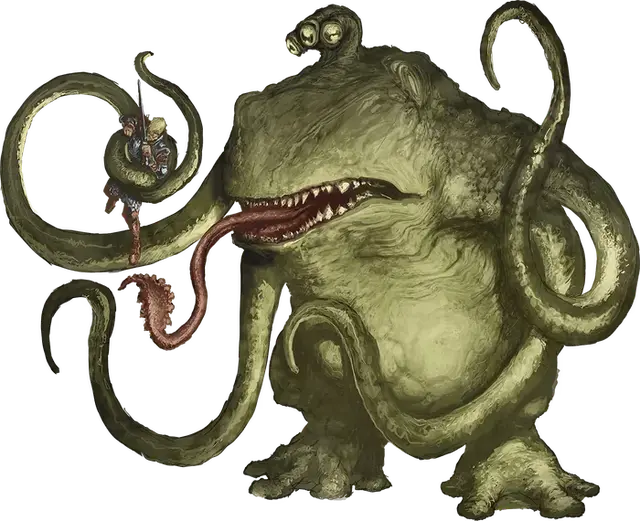

Лягемот
Froghemoth
Огромный Монстр, без мировоззрения

Класс Доспеха 14 (природный доспех)
Хиты 161 (14к12 + 70)
Скорость 30 футов, плавая 30 футов
| мод | спас | ||
|---|---|---|---|
| СИЛ | 23 | +6 | +6 |
| ЛОВ | 13 | +1 | +1 |
| ТЕЛ | 20 | +5 | +9 |
| мод | спас | ||
|---|---|---|---|
| ИНТ | 2 | −4 | −4 |
| МДР | 12 | +1 | +5 |
| ХАР | 5 | −3 | −3 |
Навыки Восприятие +9, Скрытность +5
Сопротивление урону огонь, электричество
Чувства тёмное зрение 60 футов, пассивное Восприятие 19
Опасность 10 (5900 опыта)
Бонус мастерства +4
Среда обитания Болото, Подземье
Особенности
Амфибия. Лягемот может дышать и на воздухе и в воде.
Шоковая восприимчивость. . Если лягемот получает урон электричеством, то он получает два эффекта до конца своего следующего хода: его скорость уменьшена вдвое и он совершает с помехой спасброски Ловкости
Действия
Мультиатака. Лягемот совершает одну атаку Укусом и две атаки Щупальцами, и использует Язык, если это возможно.
Укус. . Рукопашная атака оружием: +10 к попаданию, досягаемость 5 футов, одна цель. Попадание: 22 (3к10+6) колющего урона и цель проглочена если она существо Среднего размера или меньше. Проглоченное существо ослеплено и опутано, имеет полное укрытие от атак и других эффектов снаружи лягемота, и получает 10 (3к6) урона кислотой в начале каждого хода лягемота.
Желудок лягемота может содержать двух существ одновременно. Если лягемот получит 20 или больше урона в один ход от существа внутри себя, то он должен успешно пройти спасбросок Телосложения Сл 20 в конце этого хода или изрыгнуть все проглоченных существ, каждое из которых падает сбитым с ног в 10 футах от лягемота. Если лягемот умирает, то проглоченное существо больше не является опутанным и может выбраться из тела, использовав 10 футов движения и упав ничком при выходе.
Щупальце. . Рукопашная атака оружием: +10 к попаданию, досягаемость 20 футов, одна цель. Попадание: 19 (3к8 + 6) дробящего урона, и цель становится схваченной (Сл высвобождение 16) если она является Огромным существом или меньше. До окончания захвата лягемот не может использовать это щупальце для другой цели. У лягемота всего четыре щупальца.
Язык. Лягемот выбирает целью одно существо Среднего размера или меньше, которое он может видеть, не далее 20 футов от себя. Цель должна совершить спасбросок Силы Сл 18. При провале цель подтягивается на незанятое место в 5 футах от лягемота.
Описание
Лягемот – хищная амфибия размером со слона. Он водится в болотах, и у него четыре щупальца, толстая резинистая шкура, клыкастая пасть с липким языком и удлиняющийся отросток с тремя круглыми глазами, смотрящими в разные стороны.
Лягемоты – существа из другого мира. В дневнике, предположительно написанном давным–давно волшебником Лумом Безумным, описываются странные цилиндрические помещения, сделанные из металла, закопанные глубоко в земле, из которых появился лягемот, но надежных свидетельств расположения этого места не существует.
Каждые несколько лет лягемот может отложить без спаривания оплодотворенное яйцо. Лягемот совершенно не заботится о яйце и может даже съесть вылупившегося детеныша. Выживание юного лягемота чаще всего зависит от того, оставит ли его родитель в безразличии. Новорожденный лягемот вырастает до полного размера за несколько месяцев, без разбора поедая других существ в своем болоте. Он учится прятать свою огромную тушу в мутной воде, высовывая над водой только отросток с глазами, чтобы следить за проходящими существами. Когда еда проходит в пределах досягаемости, лягемот вылезает из воды с щупальцами и языком наготове. Он может схватить несколько целей одновременно, удерживая их, пока языком он хватает ещё одну и тянет к себе, чтобы сожрать.
Если племя жаболюдов натыкается на лягемота, оно начинает почитать его как бога и делает все возможное, чтобы завлечь его в своё логово. Лягемота можно приручить (в каком–то смысле) предлагая ему пищу, и жаболюды могут общаться с ним на базовом уровне, так что существо может съесть всего нескольких жаболюдов, прежде чем начать следовать за остальными. Жаболюды собирают ему еду как дань, предоставляют ему комфортное логово, фанатично защищают от любого вреда и стараются удостовериться, что юный лягемот достигает зрелости.